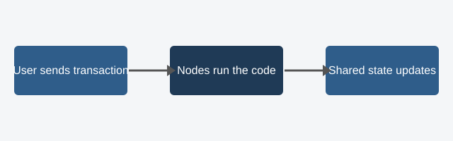

Smart Contracts
A smart contract is code that lives at an address on a blockchain. Anyone can send it a transaction, every node runs the same code, and the result is recorded in shared state. Because nobody controls the machine that runs it, the rules cannot be quietly changed or skipped.

How a Smart Contract Works
- A developer writes the contract, commonly in Solidity for Ethereum, and compiles it to bytecode.
- The bytecode is deployed in a transaction and receives its own address.
- Users or other contracts call its functions by sending transactions.
- Every validating node executes the function and agrees on the new state.
- The caller pays a gas fee that covers the computation.
Common Uses
- Tokens, including stablecoins and NFTs
- Decentralized exchanges and lending protocols (DeFi)
- Escrow and automatic payouts when conditions are met
- Voting and organization governance (DAOs)
Strengths and Limits
| Strength | Limit |
|---|---|
| Runs automatically with no middleman | Bugs are costly because deployed code is hard to change |
| Code and history are publicly auditable | Every action costs gas, so computation is expensive |
| Same behavior for every user | Contracts cannot read outside data without an oracle |
A Tiny Example
This simplified Solidity contract stores a number that anyone can read and update.
// SPDX-License-Identifier: MIT
pragma solidity ^0.8.20;
contract Counter {
uint256 public count;
function increment() public {
count += 1;
}
}